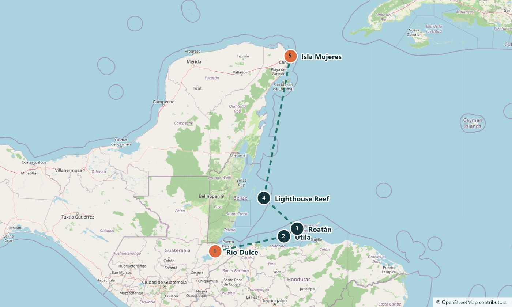

Leg 1 · Rio Dulce → Isla Mujeres
From a jungle river to Mexico, across 600 miles of reef
Offshore passage
1–14 Dec 2026 · 2–14 days · 600 nautical miles on the full leg
1 of 5 berths booked
The route
You leave the Rio Dulce, a river lined with rainforest, and sail 600 nautical miles north to Isla Mujeres in Mexico. You spend four days and nights under way and learn to stand watch in the dark. Between passages you anchor off the Bay Islands of Honduras and Lighthouse Reef in Belize, both on the Mesoamerican Barrier Reef, the second largest barrier reef on the planet.
The stops
Rio Dulce
Guatemala. A river and lake in the rainforest, where yachts shelter during hurricane season. See on Google Maps
Utila
Honduras. The smallest of the three Bay Islands and a base for divers. See on Google Maps
Roatán
Honduras. The largest Bay Island, with the reef running close along the shore. See on Google Maps
Lighthouse Reef
Belize. A remote atoll 80 kilometres off the coast, home to the Great Blue Hole, a sinkhole more than 300 metres across. See on Google Maps
Isla Mujeres
Mexico. A seven-kilometre island with calm beaches on the west side. See on Google Maps
The plan for each day, and exact harbours, are shared when you book and can change with the weather.
The route on a map
